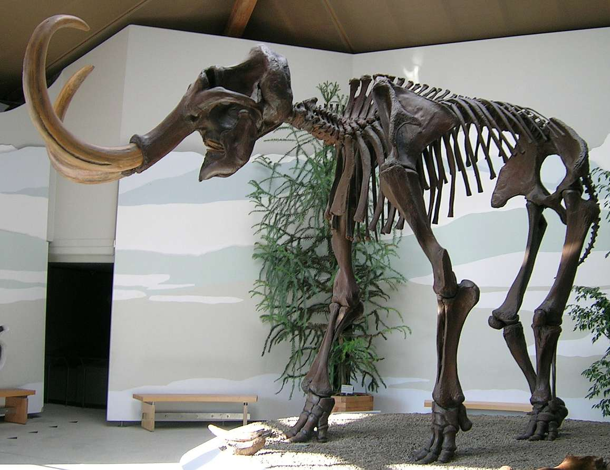

Mammoth
Voi Ma Mút thế Pleistocene
Tổng quan
Thế
Pleistocene
Họ
Elephantidae
Chi
Mammoth
Cao
3.3 m
Nặng
6 tấn
Thức ăn

Mammoth, hay còn gọi là Voi Ma Mút, là một loài động vật thuộc họ Elephantidae, đã bị tuyệt chủng. Tồn tại ở thế Pleistocene. Chúng đã sống trên khắp bán đảo trên Trái đất, và là một trong những loài động vật lớn nhất từng tồn tại trên trái đất.
Nguồn: wikipedia.org
Phân bố
Khu vực Châu Á, Bắc Mỹ và Châu Âu
Thông tin thêm về Mammoth
Kỷ nguyên và phân bố
Mammoth sống cách đây khoảng 4.8 triệu năm đến 4500 năm trước vào thế Pleistocene. Trước khi bị tuyệt chủng, loài voi này sống trải đều trên Trái Đất, chúng đã lang thang khắp vùng lãnh nguyên lạnh giá và thảo nguyên của Châu Âu, Châu Á và Bắc Mỹ.
Tên khoa học
Mammuthus có nguồn gốc từ tiếng Hy Lạp cổ đại, với từ "Mammothos" có nghĩa là "đất nặng", "vật nặng nề". Tên khoa học này được đặt để phân biệt loài Mammoth với các loài voi khác, và là một trong những tên gọi phổ biến được sử dụng trong nghiên cứu khoa học về loài động vật này.

Kích thước và ngoại hình
Mammoth được miêu tả có kích thước lớn, cao từ 3.3 đến 4 m và nặng khoảng 5,4 đến 8 tấn. Có đặc điểm lông dài (xấp xỉ 50 cm), rậm (hơn so với voi hiện tại), ngà dài và cong (hoá thạch ở Siberia có ngà dài 3,5 m), răng voi ma mút rất dài, cong quặp vào trong, dài nhất tới 5 cm, chân sau ngắn nên trọng tâm toàn thân nghiêng về phía sau, vai nhô cao. Chân chỉ có 4 ngón (kém 1 ngón so với voi hiện nay), da dày. Da màu đen, nâu và nâu đỏ, lông vàng.

Những con voi ma mút lông xù cũng có một cục u trên lưng, mà các nhà khoa học cho rằng đó là kho dự trữ chất béo cung cấp năng lượng khi thức ăn khan hiếm, giống như bướu của lạc đà.
Chế độ ăn
Mammoth là một động vật ăn thực vật và sống trong các bầy đàn lớn. Chúng có răng lớn, sắc cạnh, thích hợp cho nghiền nát cỏ. Vòi của voi ma mút có hai chỗ lồi giống như ngón tay, một ở phía trước và một ở phía sau, giúp chúng dễ dàng túm lấy cỏ.

Khám phá
Năm 1799, một thợ săn đã phát hiện ra một bộ xương voi ma mút lông mịn bị chôn vùi trong lớp băng vĩnh cửu trên một bờ sông ở Siberia. Năm 1806, bộ xương được đưa đến Viện Động vật học của Viện Hàn lâm Khoa học Nga, nơi họ ghép các mảnh lại với nhau.
Đây là lần đầu tiên Bảo tàng Động vật học Nga, do Wilhelm Gottlieb Tilesius đứng đầu, có thể tái tạo lại bộ xương của một loài động vật đã tuyệt chủng, ngoại trừ một lỗi. Tilesius đã đặt những chiếc ngà vào sai hốc, khiến chúng cong ra ngoài thay vì vào trong.
Sự tuyệt chủng
Cho đến gần đây, người ta cho rằng con voi ma mút cuối cùng biến mất ở châu Âu và nam Siberia khoảng 12.000 năm trước đây, tuy nhiên có những khám phá dẫn đến kết luận là chúng còn sống ở đó khoảng 10000 năm trước đây. Không lâu sau đó voi ma mút cũng biến mất khỏi Siberia. Bên cạnh việc bị con người săn bắt quá mức, voi ma mút có thể đã phải chịu khí hậu ấm lên. Môi trường sống thay đổi khi nhiệt độ ấm lên, khiến các hồ trở nên nông hơn, khiến voi ma mút không có gì để uống. Những thay đổi diễn ra quá nhanh khiến voi ma mút không kịp thích nghi và tiến hóa.
Sự hồi sinh
Các nhà khoa học nói rằng họ có thể mang voi ma mút trở lại! Họ đang làm việc để đưa voi ma mút lông mịn trở lại. Trước tiên, họ cần sắp xếp trình tự bộ gen của voi ma mút lông xoăn, chỉnh sửa DNA của họ hàng gần còn sống để khớp với nó, tạo phôi với bộ gen đã sửa đổi, sau đó mang chúng đến hạn trong một người mẹ thay thế còn sống. Vào năm 2021, một nhóm các nhà khoa học và doanh nhân thông báo rằng họ đã thành lập một công ty mới có tên là Colossal nhằm mục đích hồi sinh loài voi ma mút lông dài về mặt di truyền và đưa chúng trở lại vùng lãnh nguyên Siberia.